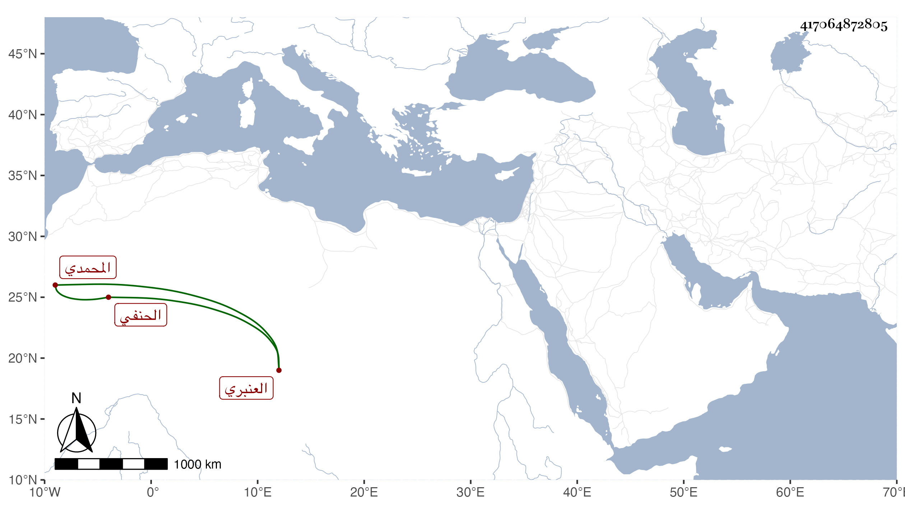

0902Sakhawi.DawLamic.ITO20230111-ara1.EIS1600.417064872805
Biography ID: 417064872805
669
محمد بن شاذي حجا ناصر الدين المحمدي نسبة لتاجر أبيه العنبري الحنفي . ولد في تاسع عشري شعبان سنة ست وعشرين وثمانمائة بدرب المرسينة من قناطر السباع ونشأ فقرأ القرآن عند الشمس بن نعناع واشتغل في النحو وغيره عند الشمس بن خلف الحنفي ، بل حضر عند ابن الديري والأقصرائي والشمني وسيف الدين وغيرهم بل عند طبقة تلي هؤلاء وحج وتكسب في العنبر وبرع في صناعته وتولع بالأدب وخالط فضلاءه كالحجازي والمنصوري والشاب التائب وتطارح معهم ، ومدح الأكابر فمن دونهم كالبارزي وابن مزهر وأثنى على إحسانهما والسلطان وسمح له بالمعتد في إقطاعه ببساط والعز الحنبلي وقال في أول قصيدته التي امتدحه بها :
| عيون مهى كلمن قلبي بالغمز | فجاوب دمعي عن فؤادي بما يجزي |
ومخلصها :
| أبثك يا من لامني في تغزلي | وترك امتداحي أهل ذا الزمن المرزي |
| فإن اكتساب الشعر ذل وأنني | قنعت لمدحي من ذوي العلم بالعز |
ومما قاله حين الغصب من أرباب الأملاك والأوقاف معلوم خمسة أشهر بعد شهرين فيما مضى بحجة مشي ابن عثمان ملك الروم على البلاد للاستعانة ببذلك في دفعه :
| لولا العدو لما داس الخبيث بنا | في جمرة لم يدسها قبل دائسها |
| في وزن شهرين لم نسطع فكيف بنا | في خمسة وولي الوزن سادسها |
| فادعوا بقلب لعل الله يكشف ما | بكم ويطمع بعد اليأس آيسها |
| وادعوا بخذلان من عادى المليك عسى | تنجاب عن غرة الدنيا عساعسها |
كتب إليه الشهاب المنصوري ملغزا في فأر :
| يا سيدا بالدر من نطقه | حل محل البدر في أفقه |
| ما قولكم في فاسق مفسد | لم ينهه الشارع عن فسقه |
| يأكل مال الناس غصبا ولا | إثم ولا تحريم في رزقه |
| وهو على إفساده متق | ملازم والخوف من خلقه |
| فأعمل الفكرة في حله | لتوصل المعنى إلى حقه |
فأجابه بقوله :
| يا سيدا كاتب من رفقه | عبيده المعهود في رقه |
| إن الذي تعنيه يا ذا العلي | جواب آفاق على رزقه |
| يأكل بالقرض ولكنه | لم يرض رب الحق في حقه |
| الفأر قاد الليل لم يرضه | فلازم التسهيد من حذقه |
| إن حزته ملكا فلا تبقه | فقتله أنسب من عتقه |
وله في كاتبه :
| إذا ما قيل من تأتي الفتاوي | لكهف علومه السامي فتاوي |
| وفي علم الحديث سخا قديما | بإسناد إليه قل السخاوي |
وقوله فيه أيضا ارتجالا :
| إذا ما دجى ليل الشكوك على الوزر | وضل هدي الإفهام في غيهب الحدس |
| كشفنا بشمس الدين ظلمة ليلها | وهل يكشف الظلماء إلا سنى الشمس |
بل خمس البردة وافتتحه بقوله :
| يا مازجا بدم ينهل كالديم | كؤوس دمع أدارتها يد الألم |
| بمن صبوت إليهم ملقى السلم | أمن تذكر جيران ببذي سلم |
ورأيته فيمن قرض مجموع البدري ومن نظمه فيه :
| حوى التقى مجموعا فريدا | تسامى في النثار وفي النظام |
| يود الدهر لو حاكى الحريري | على منواله نسج الكلام |
وقوله :
| تجلد كل مجموع رآه | مخافة أن يحد بألف جلده |
| وأقسم من تلفظ فيه غيبا | قطعت لسانه وسلخت جلده |
بل كتب عنه صاحب المجموع قوله :
| يا بارقا راح يحكي | من الثغور مباسم |
| لقد حكيت ولكن | شم برق مبسم هاشم |
وكتب على شرح البهاء إلا بشيهي للمختصر :
| قل للبهاء الذي | بالفضل والعلم اشتهر |
| زدت البساطي بسطة | في علم هذا المختصر |
| وجلوت من بكر الفكر | حلي الجواهر والدرر |
